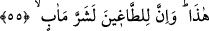
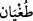
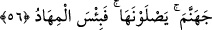
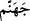
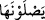
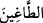
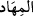
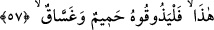
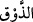

55. Bu böyle; ama azgınlara kötü bir gelecek vardır.
“Bu böyle;” yâni muttakîlerle ilgili durum bu anlattıklarımızdan ibârettir.
Bazı âlimlere göre buradaki (__WORD__) lâfzı, müelliflerin eserlerinin herhangi bir faslını
bitirip bundan ayrı bir başka fasla başlamak istediklerinde kullandıkları (__WORD__) lâfzı olup
anlamı şudur: Anlatmış olduğumuz falan falan şeyleri iyi belle ve birazdan anlatacak
olduğum şeyleri bekle.
“Ama” en kötü dönüş yeri peygamberleri yalanlayarak Allah’a karşı isyan eden
“azgınlara” yâni kâfirlere “kötü bir gelecek vardır.”
Râğıb (__WORD__)’ın “isyanda haddi aşmak” olduğunu belirtir.
56. Onlar cehenneme girecekler. Orası ne kötü bir kalma yeridir.
“Onlar” kıyamet günü harâretini hissedecekleri “cehenneme girecekler.”
(__WORD__), en kötü geleceğin ne olduğunu beyân eden bir atıftır. (__WORD__) lâfzı ise, (__WORD__)
ifâdesindeki gizli zamirden hal olup ifâde “Kıyamet günü girecekleri ve harâretini
hissedecekleri cehennem” anlamındadır. Bugünü kendileri için bizzat yine kendileri
hazırlamıştı.
“Orası” yâni cehennem “ne kötü bir kalma yeridir.” O halde Cehennem kötü bir
yerdir. Buradaki (__WORD__), uyumakta olan birinin ‘yatağı’ndan emânet (müsteâr) olarak
kullanılmıştır. Çünkü cehennemde ne döşek vardır ne de istirahat. Cehennemdeki yegâne
döşek de yorgan da ateştir. Nitekim Allah Teâlâ bunu şöyle ifâde buyurmuştur: “Onlar
için cehennem ateşinden döşek, üstlerinde de cehennem ateşinden örtüler var” (el-
A‘râf 7/41). Yâni onların döşekleri de yorganları da ateştir.
57. İşte bu; kaynar su ve irindir. Onu tatsınlar.
“İşte bu; kaynar su ve irin” azâbını tadsınlar diye “dir. Onu tatsınlar” bakalım.
(__WORD__), ağızla bir şeyin tadını hissetmektir. Aslen az tadımlar için kullanılırsa da
yemediğimiz çok tadımlar için kullanılması da sahihtir. Alaya almak için “azab”